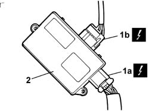

5505A66 FRONT, CENTRE OR REAR SUN ROOF (ONE) NODE (DIGITAL NETWORK CONTROL UNIT) - R.R.
- Path
- Procedures > 55 ELECTRICAL EQUIPMENT > 5505 INSTRUMENT/GAUGE ELECTRICAL CIRCUITS > 5505A MULTI-FUNCTION COMPONENTS > 5505A66 FRONT, CENTRE OR REAR SUN ROOF (ONE) NODE (DIGITAL NETWORK CONTROL UNIT) - R.R.
- Kind
- repair procedure (removal / refitting; the operation number is the code)
- Applies to
- all engines; all production periods
- Interactive page
- https://sloeber94.github.io/elrnDB-fUlss/en/#/179007526
Applies to: all engines; all production periods
 Removing
Removing
 Refitting
RefittingOp. 5530B56 BATTERY DRIP TRAY COVER - R.R.
- Disconnect the negative battery terminal.
Op. 7040H30 FRONT PILLAR TRIM (ONE), LEFT OR RIGHT - R.R.
Op. 7040H38 CENTRE PILLAR UPPER ELEMENT (ONE), LEFT OR RIGHT - R.R
Op. 7040H42 REAR PILLAR TRIM (ONE), LEFT OR RIGHT- R.R
Op. 7040E10 FRONT COURTESY LIGHT - R+R
Op. 7040E12 CENTRE COURTESY LIGHT - R+R
-
Op. 7040E16 REAR COURTESY LIGHT - R+R
- < R1 > [Compreso interruttore]
Op. 7065C30 GRAB HANDLE (ONE) LEFT, RIGHT OR CENTRE PASSENGER COMPARTMENT INTERIOR - R.R
- < R1 > [Compreso interruttore]
Op. 7040H33 GLASSES HOLDER (1) LH OR RH, ON ROOF TRIM - R R
Op. 7065C34 SUN VISOR (ONE), LEFT OR RIGHT - R.R.
- < R1 > [All]
Op. 7065C62 ADDITIONAL INTERIOR REAR VIEW MIRROR - R.R.
Op. 7040H50 REAR PANEL (ONE), LEFT OR RIGHT - R.R
Op. 7065C56 ODDMENT COMPARTMENT UNDERNEATH FRONT SEATS - R.R.
Op. 7045A10 FRONT SEAT (ONE), LEFT OR RIGHT - R.R.
Op. 7050A90 REAR SEAT (ONE) - R RE - REPAIR WITH SEAT REMOVED
-
Op. 7040H16 ROOF PANEL LINING FOR VERSIONS WITH SUN ROOF - R.R
- < R1 > [Compreso supporto aggancio]
-

Applies to: all engines; all production periods
Refitting
Removing- Posizionare la centralina in sede e vincolarla con gli appositi fissaggi "velcro".
- Connect the electrical connections.
Op. 7040H16 ROOF PANEL LINING FOR VERSIONS WITH SUN ROOF - R.R
Op. 7050A90 REAR SEAT (ONE) - R RE - REPAIR WITH SEAT REMOVED
- < R1 > [Destro centrale e destro posteriore
Op. 7045A10 FRONT SEAT (ONE), LEFT OR RIGHT - R.R.
Op. 7065C56 ODDMENT COMPARTMENT UNDERNEATH FRONT SEATS - R.R.
Op. 7040H50 REAR PANEL (ONE), LEFT OR RIGHT - R.R
Op. 7065C62 ADDITIONAL INTERIOR REAR VIEW MIRROR - R.R.
Op. 7065C34 SUN VISOR (ONE), LEFT OR RIGHT - R.R.
- < R1 > [Compreso supporto aggancio]
Op. 7040H33 GLASSES HOLDER (1) LH OR RH, ON ROOF TRIM - R R
Op. 7065C30 GRAB HANDLE (ONE) LEFT, RIGHT OR CENTRE PASSENGER COMPARTMENT INTERIOR - R.R
-
Op. 7040E16 REAR COURTESY LIGHT - R+R
- < R1 > [All]
Op. 7040E12 CENTRE COURTESY LIGHT - R+R
- < R1 > [Compreso interruttore]
Op. 7040E10 FRONT COURTESY LIGHT - R+R
Op. 7040H42 REAR PILLAR TRIM (ONE), LEFT OR RIGHT- R.R
Op. 7040H38 CENTRE PILLAR UPPER ELEMENT (ONE), LEFT OR RIGHT - R.R
Op. 7040H30 FRONT PILLAR TRIM (ONE), LEFT OR RIGHT - R.R.
- < R1 > [Compreso interruttore]
Topics linked from this page (16)
- 5530B56 BATTERY DRIP TRAY COVER - R.R.
- 7040E10 FRONT COURTESY LIGHT - R+R
- 7040E12 CENTRAL COURTESY LIGHT - R+R
- 7040E16 REAR COURTESY LIGHT - R+R
- 7040H16 ROOF PANEL LINING - R R
- 7040H30 FRONT PILLAR TRIM - R R
- 7040H33 GLASSES HOLDER (1) LH OR RH, ON ROOF TRIM - R R
- 7040H38 CENTRAL PILLAR UPPER ELEMENT - R R
- 7040H42 REAR PILLAR TRIM - R R
- 7040H50 REAR PANEL - R R
- 7045A10 L/H OR R/H FRONT SEAT (ONE) - R+R
- 7050A90 REAR SEAT (ONE) - R RE - REPAIR WITH SEAT REMOVED
- 7065C30 INTERIOR L/H OR R/H GRAB HANDLE (ONE) - R+R
- 7065C34 L/H OR R/H SUN BLIND (ONE) - R+R
- 7065C56 ODDMENT COMPARTMENT UNDERNEATH FRONT SEATS - R.R.
- 7065C62 ADDITIONAL INTERIOR REAR VIEW MIRROR - R.R.